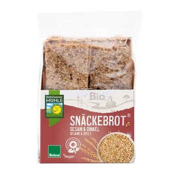

Snäckebrot Sesam & Dinkel, 200g
3,29 €
Hersteller: Bohlsener Mühle GmbH & Co. KG (Mühlenstraße 1, 29581 Bohlsen) Zutaten: DINKELvollkornmehl 33 %, DINKELvollkornschrot 20 %, SESAM 17 %, ROGGENvollkornmehl, Sonnenblumenöl 11 %, HAFERvollkornflocken geschrotet, Leinsamen, Reismehl, Meersalz, Hefe, Antioxidationsmittel: Rosmarinextrakt
Jetzt im Online-Shop kaufen ↗Bestellung & Bezahlung sicher über unseren Partner-Shop bioladen-borna.de